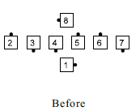
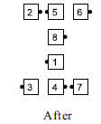

Triple Diamond Concept
Triple Diamonds consist of three adjacent Diamond formations some of which have positions occupied by phantoms.
The two most common types of Triple Diamonds are illustrated below.


Triple Diamonds are analogous to Triple Boxes [C1] and Triple Waves/Lines/Columns [C2].
Example: Triple Diamond, Flip The Diamond
 
Triple Diamond calls are (4 or less)-dancer calls, requiring you to work only with the dancers in your Diamond. The historical application of 8-dancer calls such as Diamond Chain Thru is considered improper at C3A.
© Copyright 2004-2008 Vic Ceder and CALLERLAB Inc., The International Association of Square Dance Callers. Permission to reprint, republish, and create derivative works without royalty is hereby granted, provided this notice appears. Publication on the Internet of derivative works without royalty is hereby granted provided this notice appears. Permission to quote parts or all of this document without royalty is hereby granted, provided this notice is included. Information contained herein shall not be changed nor revised in any derivation or publication.